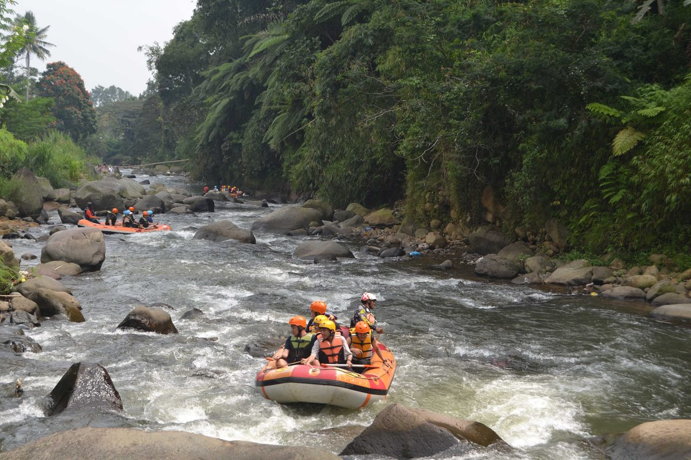
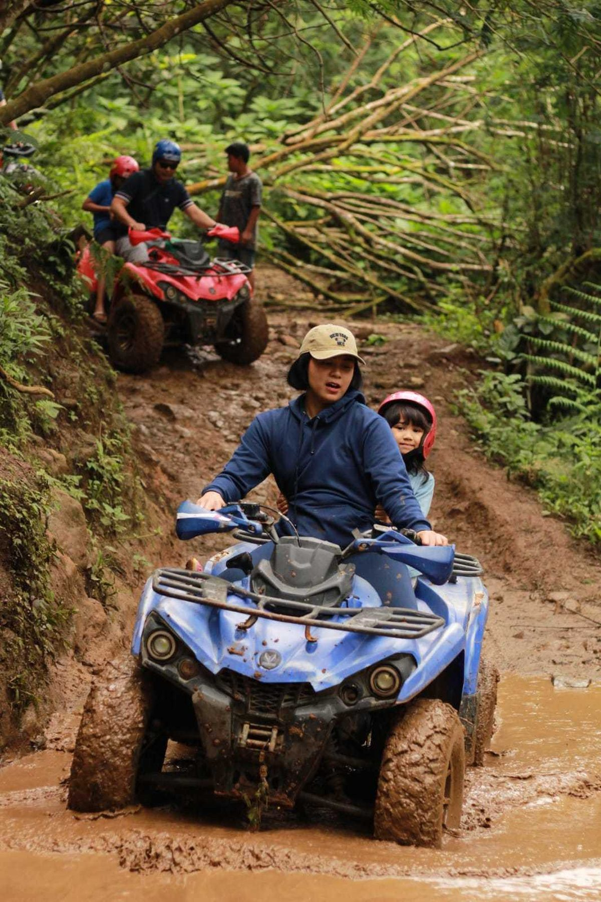
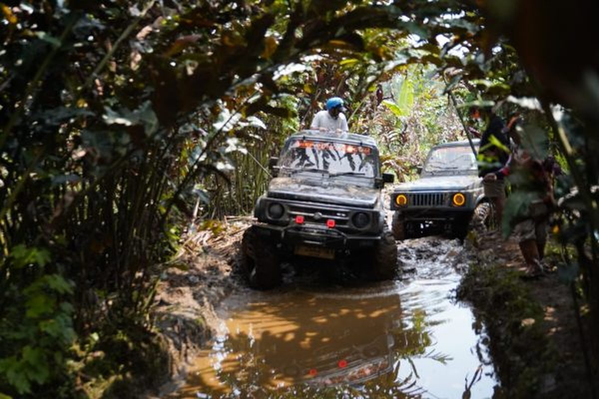

Arung jeram sungai alami dikelilingi hutan tropis · Rp 175.000/orang · Puncak Cisarua, Bogor
Per
Orang
Jam
Durasi
Min.
Peserta
Google
Rating
Info Lengkap
Rafting Puncak Bogor dari Hanya Adventure mengajak Anda mengarungi jeram sungai alami dengan grade II–III — cukup menantang untuk memacu adrenalin, tapi tetap ramah untuk pemula dan keluarga. Sepanjang perjalanan, peserta akan dikelilingi hutan tropis yang lebat, suara air deras, dan bebatuan alami khas kawasan Puncak.
Setiap perahu dipandu oleh skipper berpengalaman yang sudah menangani ribuan peserta sejak 2012. Sebelum turun ke sungai, seluruh peserta mendapat safety briefing dan perlengkapan lengkap: helm, pelampung (life jacket), dan dayung standar keselamatan.
Aktivitas ini juga jadi salah satu pilihan favorit untuk gathering perusahaan — satu perahu berarti satu tim yang harus kompak mendayung bersama, menjadikannya ice breaker alami yang jauh lebih berkesan dibanding games biasa. Bisa digabung dengan sewa ATV atau jadi bagian dari program outbound korporat.
Harga
Galeri



FAQ
Konsultasi gratis · Respons cepat · Terpercaya sejak 2012